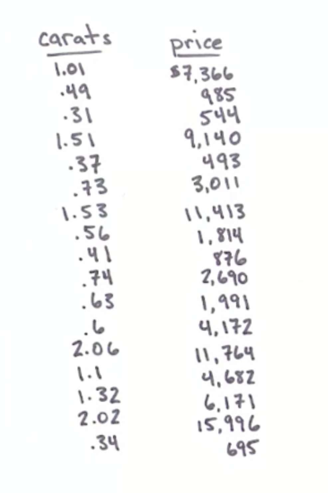
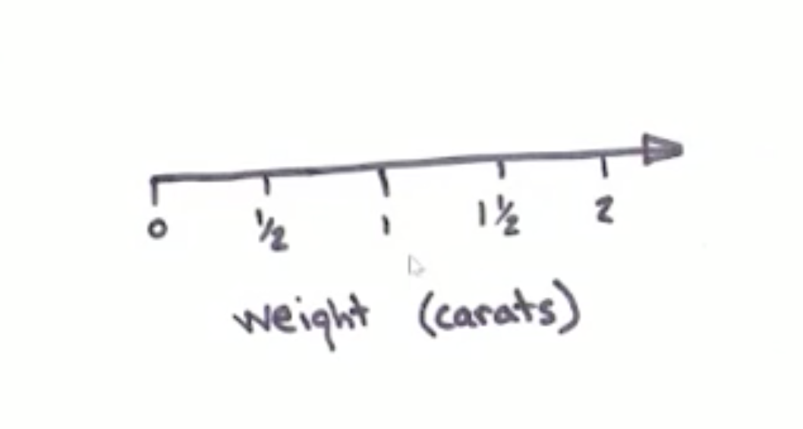
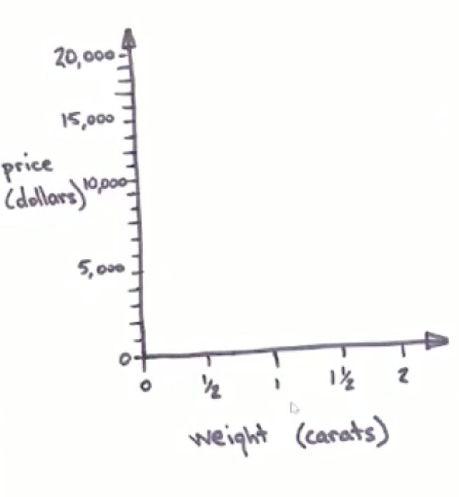
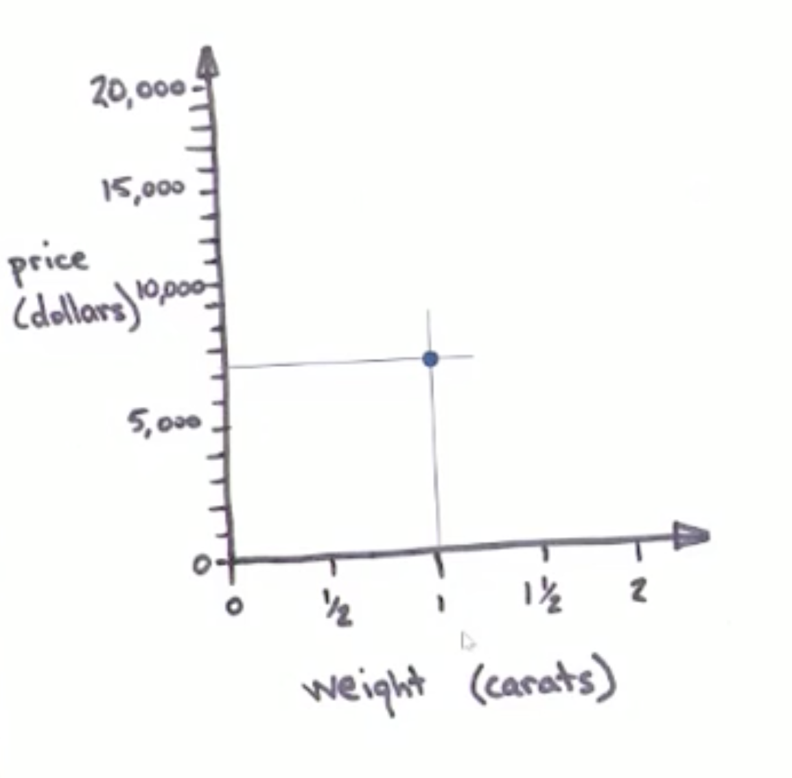
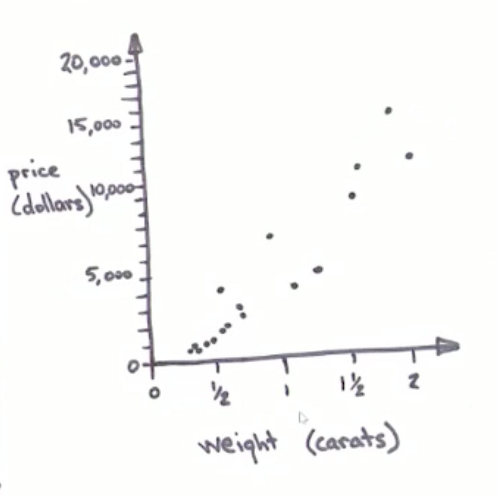
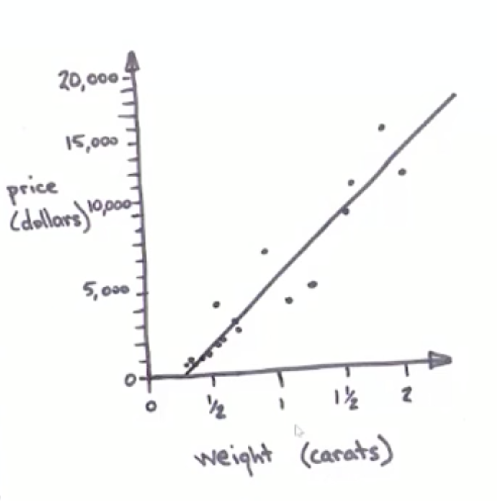
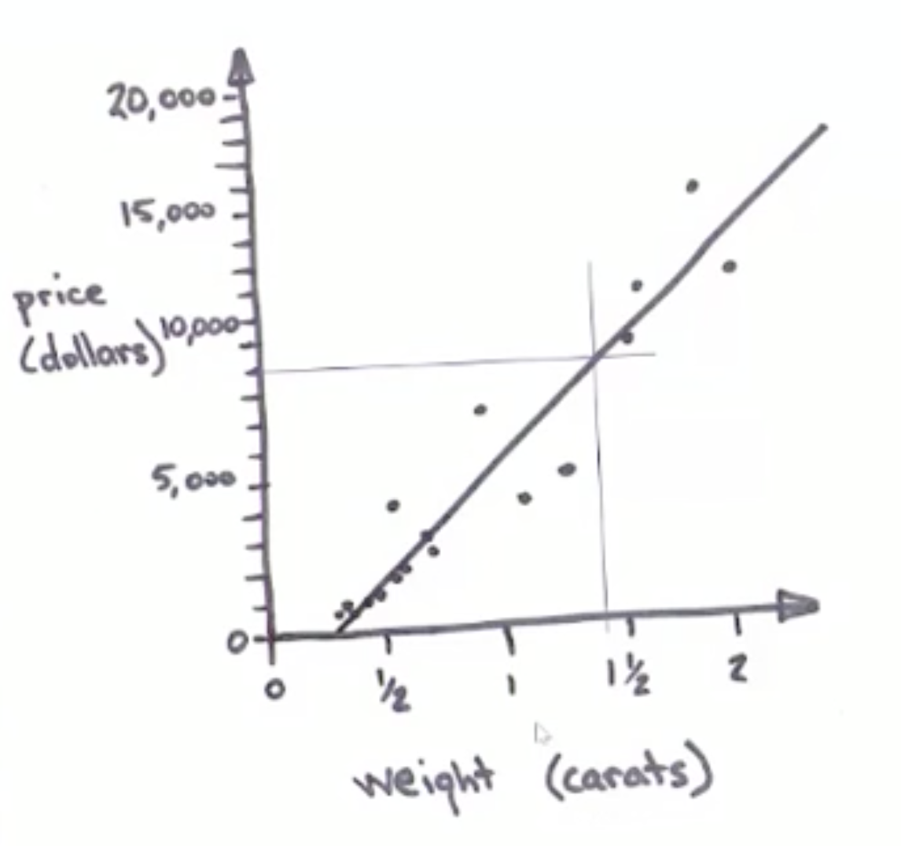
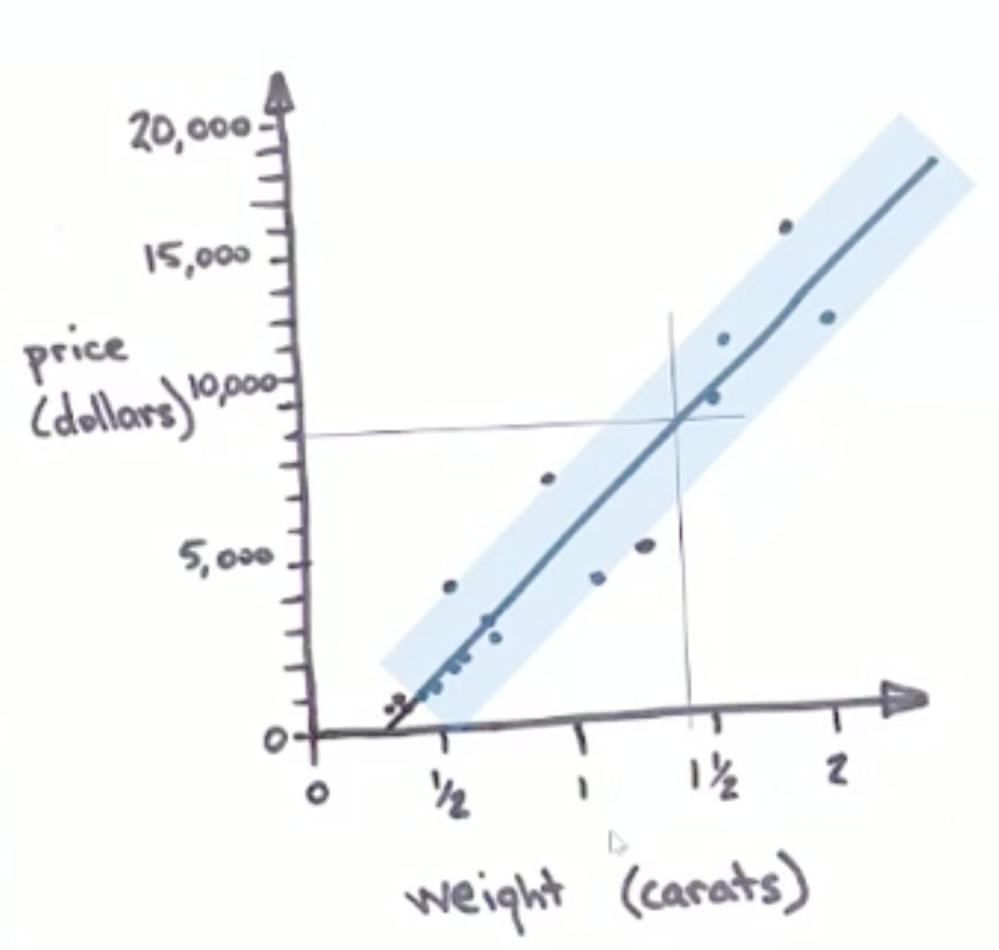
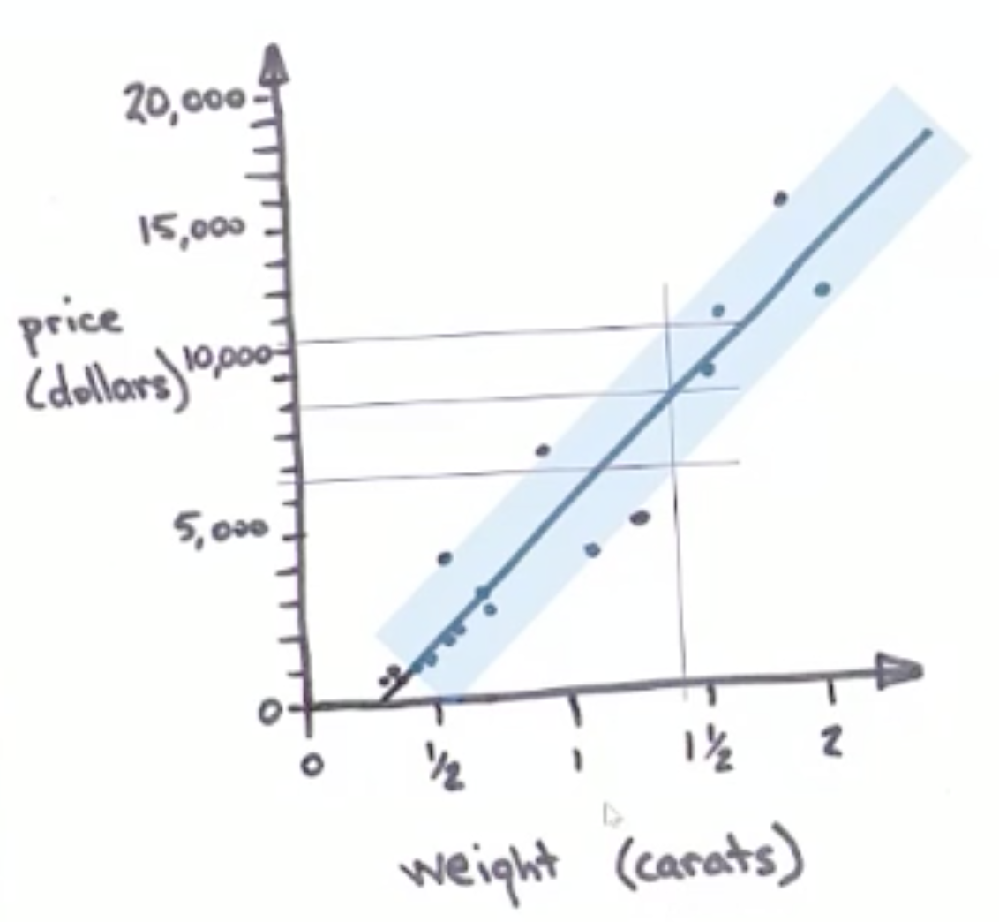

Linear regression is the technical term for drawing a straight line through data points. I'll show you how it works while diamond shopping.
I have a ring that belonged to my grandmother. It has a setting for a 1.35 carat diamond, but sadly, there is no diamond in it. I would like to restore it, so I go to the jewelry store to figure out how much a 1.35 carat diamond will cost. I will need to save up before I can buy it.
At the jewelry store, I find that there are no 1.35 carat diamonds to price. Undeterred, I pull out a pen and paper and write down the prices and weights of every diamond in the case.
I note that the weights don't go much higher than 2 carats and draw a horizontal number line that will accommodate them.
I also draw a vertical number line that goes from zero to more than the highest price in the case.
These are my coordinate axes. In a city with gridded streets like Manhattan, you can identify any intersection just by giving its East-West street and North-South avenue. In the same way, coordinate axes let you name any point by where it hits the horizontal and the vertical axis. This lets me plot my first data point by finding its weight, drawing a vertical line up, finding its price, drawing a horizontal line over, and putting a dot where they cross.
I can repeat this with the weights and pricess of all the other diamonds.
This turns my list of prices and weights into a picture. So far I haven't thrown any information away or added any. I've just changed it to another form. The data is now a picture. The picture has an obvious shape to it. It looks like a wide fuzzy line going up and to the right. My next step is to draw a straight line through the middle of it. There are roughly equal numbers of data points on each side of the line, and it hugs the middle of the swath of data.
Drawing a line through the data is a very significant step. Although the line may seem obvious to us, that is only because we have supercomputer-quantities of neural computing power dedicated to seeing patterns. By drawing a line, I've created a simplified cartoon version of the data. In this step, I actually do throw away some of the information in the data. But in return I get a simplified story that I can use to answer questions. Finding the curve that best fits your data is called regression, and when that curve is a straight line, it's called linear regression. With a linear model in place, I can finally answer my question, "How much will a 1.35 carat diamond cost me?" To do this, I eyeball a vertical line up from the 1.35 carat point on the weight axis. From where it crosses my linear model, I eyeball a horizontal line over to the price axis. It hits at about the $8000 mark. Question answered!
To make the answer even more helpful, I note that most of the diamonds don't fall right on the line. That means my 1.35 carat diamond will probably not be exactly $8000. My next question is "How close to $8000 will it be?" To estimate this, I draw a wide envelope around my line that encompasses most (about 95%) of my data points.
I'm pretty confident (about 95%) that any future diamonds I come across will fall somewhere in this envelope. To find out what this means for my diamond, I eyeball two more horizontal lines where the 1.35 carat line crosses it on the high and low side.
Now I see that I can be fairly confident that my diamond will cost more than $5800, but less than $10,200. Armed with this information, I can make a plan about how much to save from each paycheck for how long before I can restore my grandmother's ring.
My goal with this example is to show that linear regression is simple, at least conceptually. It can be done with a pen, a napkin and a careful eye, no computers or math necessary. However, in practice math does come in handy.
Say I recorded more information about the diamonds, such as color, clarity, cut and the number of inclusions. Then there would be 6 columns instead of 2, which is far more challenging to visualize. Math comes in handy when fitting a line (or the 6-dimensional equivalent of a line) to this richer data set.
And say that instead of 17 diamonds, there were 17 hundred or 17 million. The problem quickly becomes impractical for even the most dedicated artist, but computers can make short work of it.